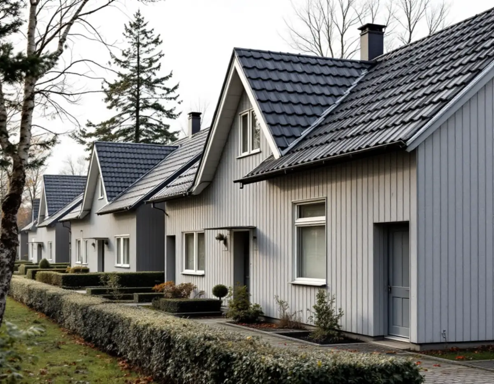
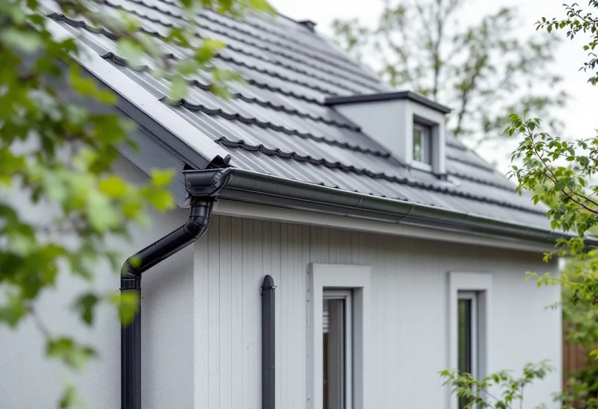

Byggår och prov
Vi går igenom husets ålder och ser till att skivorna provas innan något rivs.
På flera radhus i Hässelby lades taken från början med korrugerad eternit, ett material som innehåller asbest. När ett sådant tak är slitet blir bytet ett arbete i två led: först ska eterniten tas bort av ett företag med tillstånd, sedan ska ett nytt tak läggas. Geal Entreprenad AB har egna plåtslagare som lägger plåttak, byter hängrännor och beslag på villor och radhus i Hässelby, med gratis platsbesök och skriftligt kostnadsförslag.

Stadsmuseets Stockholms Spår om Hässelby gård lyfter fram radhusen vid Astrakangatan och Friherre Lövstavägen, som Småstugebyrån uppförde 1957. De ansågs mycket moderna när de byggdes, med fasader av sidiplattor och tak av nästan svarta invaritplattor, alltså korrugerad eternit, som då var högsta mode. Eternit är en fibercement som enligt Stadsmuseet fick stor användning tack vare sin hållbarhet och brandhärdighet.
Stadens vägledning Varsam utveckling av småhus- och villaområden skriver att man i många områden prövade nya material, att asbestcement var ett populärt sådant och att eterniten i många fall har bytts ut mot andra material. Hässelby gård hör enligt vägledningen till tunnelbanestäderna, planerad samtidigt som Vällingby. I Hässelby villastad ersattes många villor på 1960- och 1970-talen av täta grupper av enhetliga småhus, så också där finns tak från en tid då asbest användes.
För en plåtslagare betyder det att vi frågar efter byggåret innan vi går upp på ett tak i Hässelby. Är taket täckt med korrugerade skivor från den tiden behandlar vi dem som asbesthaltiga tills ett prov visar något annat.

Arbetsmiljöverket skriver att man ska räkna med att det finns asbest i hus byggda fram till 1982, och nämner asbestcementskivor, eternit, på tak och väggar som ett vanligt exempel. Asbest som är bunden i cement dammar normalt inte nämnvärt så länge man inte rör materialet, om det inte har börjat vittra sönder. Det är när skivorna ska tas loss och materialet rörs som risken uppstår.
Ett företag behöver tillstånd från Arbetsmiljöverket för att riva eller sanera material som innehåller asbest, och myndigheten nämner rivning av asbesthaltigt material på tak eller fasad utomhus som ett exempel. Ansökan ska göras åtta veckor innan arbetet ska börja. Också förarbetet på platsen, omhändertagandet av avfallet och städningen efteråt räknas som rivning och sanering.
Arbetsmiljöverket har en sökbar lista över de företag som har tillstånd för rivning och sanering av asbest. Vi planerar bytet så att rivningen görs av ett företag på den listan och att vi lägger det nya taket direkt efteråt, så att huset inte står utan tak längre än nödvändigt. Det gör också att ställningen bara behöver stå uppe en gång.
Eternitens korrugerade profil gav taken ett tydligt mönster av räfflor. Ett nytt tak av profilerad plåt kan få en liknande rytm och en mörk kulör. Vägledningen pekar på att det i dag finns fasadskivor utan asbest, så att radhusens uttryck kan bibehållas, och samma tanke gäller taken: ett materialbyte behöver inte göra att längan ser annorlunda ut.
Boverket skriver att det inte krävs bygglov för att byta taktäckningsmaterial på ett småhus, men att ändringen ska göras varsamt och anpassas till omgivningen, och att man först ska kontrollera att taket klarar den nya belastningen. Stockholms stad påpekar att bygglov ändå krävs om huset är blå- eller grönmarkerat på Stadsmuseets klassificeringskarta, ligger i ett riksintresse eller i ett område som är utpekat som särskilt kulturhistoriskt värdefullt. Vi slår därför upp fastigheten innan plåt och kulör väljs.
Mer om skillnaden mellan falsad och profilerad plåt finns på sidan om plåttak. Om fasaderna på samma hus, där eternit också kan finnas, se fasadrenovering i Hässelby.
På en radhuslänga hänger taken ihop, och plåten mellan husen, vindskivorna på gavlarna och rännorna längs takfoten är gemensamma detaljer även när varje hus har sin ägare. Byter ett hus taket och grannen inte gör det behöver anslutningen mellan dem lösas så att vattnet inte letar sig in i skarven. Bäst blir det när flera grannar gör om taken samtidigt, med samma plåt och samma rännor.
Stockholm Vatten och Avfall skriver i sin checklista att takvatten från stuprör inte bör ledas till avloppsledningen och att marken ska luta från huset så att vattnet kan rinna bort. När rännorna byts ser vi därför också över var stuprören slutar. Fastighetsägaren ansvarar enligt Stockholm Vatten och Avfall för ledningarna inom den egna fastigheten. Mer om rännor finns under hängrännor och stuprör, och om takets helhet under takrenovering i Hässelby.
Vi går igenom husets ålder och ser till att skivorna provas innan något rivs.
Fastigheten slås upp i Stadsmuseets klassificeringskarta innan plåt och kulör väljs.
Rivning, nytt underlag, plåt, rännor och beslag redovisas som egna poster.
Eterniten tas ner av ett företag med tillstånd från Arbetsmiljöverket.
Vi lägger underlag och plåt direkt efter rivningen och avslutar med rännor och beslag.
Att byta ut plåttak, hängrännor och stuprör på ett småhus är rotarbete enligt Skatteverket, och det är också att montera och montera ner byggnadsställningar i samband med rotarbetet. Avdraget är 30 procent av arbetskostnaden, högst 50 000 kronor per person och år och högst 75 000 kronor tillsammans med rutavdrag.
Material och resor ger inget avdrag. Är radhuset en bostadsrätt ger byte av plåttak, hängrännor och stuprör inte rotavdrag enligt Skatteverket. Vi drar avdraget direkt på fakturan när arbetet ger rätt till det.
Takytan, om eternit ska rivas och hur underlaget ser ut under skivorna, vilken plåtprofil som väljs, hur många hus i längan som byts samtidigt och vilken ställning som behövs. Efter ett gratis platsbesök får du ett skriftligt kostnadsförslag.
Plåttak, hängrännor och beslag.
Plåtslagare i Stockholm →Takbyte, takbesiktning och plåtarbeten.
Takläggare i Hässelby →Villastaden, Hässelby strand och gård.
Takrenovering i Hässelby →Källarbadrum, backventil och bostadsrätt.
Badrumsrenovering i Hässelby →Riva, bygga nytt och delad tomt.
Byggföretag i Hässelby →Villastad, sommarstugor och grupphus.
Fasadrenovering i Hässelby →Slipa trägolvet – eller lägga nytt.
Golvläggare i Hässelby →Villastad, grupphus och radhus i Hässelby.
Målare i Hässelby →Altan, bod och plank i villastaden och radhusen.
Snickare i Hässelby →Ny tapet i grupphus och villor.
Tapetsering i Hässelby →